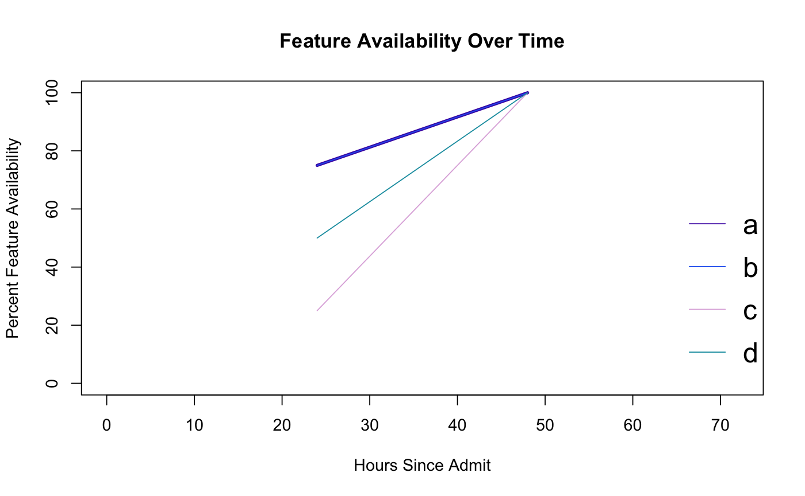

Helps you determine how much data is present in each feature, by hour, after a particular event (like patient admit)
featureAvailabilityProfiler(df, startDateColumn = "AdmitDTS", lastLoadDateColumn = "LastLoadDTS", plotProfiler = TRUE)
| df | A dataframe |
|---|---|
| startDateColumn | Optional string of the column name, representing the date of the starting event of interest (e.g., patient admit) |
| lastLoadDateColumn | Optional string of the column name, representing the date the row was loaded into the final dataset (i.e., via daily ETL) |
| plotProfiler | Default is TRUE. Whether to plot profiler results |
a list, that has as many vectors as columns in the original dataframe, with each vector holding the percentage full for each hour
http://healthcareai-r.readthedocs.io
df <- data.frame(a = c(2,1,3,5,4,NA,7,NA), b = c(0.7,-2,NA,-4,-5,-6,NA,NA), c = c(100,300,200,NA,NA,NA,NA,500), d = c(407,500,506,504,NA,NA,NA,405), admit = c('2012-01-01 00:00:00','2012-01-01 00:00:00', '2012-01-01 12:00:00','2012-01-01 12:00:00', '2012-01-02 00:00:00','2012-01-02 00:00:00', '2012-01-02 12:00:00','2012-01-02 12:00:00'), loaded = c('2012-01-03 00:00:00','2012-01-03 00:00:00', '2012-01-03 00:00:00','2012-01-03 00:00:00', '2012-01-03 00:00:00','2012-01-03 00:00:00', '2012-01-03 00:00:00','2012-01-03 00:00:00')) str(df)#> 'data.frame': 8 obs. of 6 variables: #> $ a : num 2 1 3 5 4 NA 7 NA #> $ b : num 0.7 -2 NA -4 -5 -6 NA NA #> $ c : num 100 300 200 NA NA NA NA 500 #> $ d : num 407 500 506 504 NA NA NA 405 #> $ admit : Factor w/ 4 levels "2012-01-01 00:00:00",..: 1 1 2 2 3 3 4 4 #> $ loaded: Factor w/ 1 level "2012-01-03 00:00:00": 1 1 1 1 1 1 1 1head(df)#> a b c d admit loaded #> 1 2 0.7 100 407 2012-01-01 00:00:00 2012-01-03 00:00:00 #> 2 1 -2.0 300 500 2012-01-01 00:00:00 2012-01-03 00:00:00 #> 3 3 NA 200 506 2012-01-01 12:00:00 2012-01-03 00:00:00 #> 4 5 -4.0 NA 504 2012-01-01 12:00:00 2012-01-03 00:00:00 #> 5 4 -5.0 NA NA 2012-01-02 00:00:00 2012-01-03 00:00:00 #> 6 NA -6.0 NA NA 2012-01-02 00:00:00 2012-01-03 00:00:00d <- featureAvailabilityProfiler(df = df, startDateColumn = 'admit', lastLoadDateColumn = 'loaded')#> Loaded 8 rows and 7 columns #> Earliest admit (or equivalent) is from: 1325530800 (from admit ) #> Data was last loaded on: 1325574000 (from loaded ) #> Columns that will be assessed for nulls:abcd #> Calculating nulls for features from hrs: 0 to 1 #> #> Calculating nulls for features from hrs: 1 to 2 #> #> Calculating nulls for features from hrs: 2 to 3 #> #> Calculating nulls for features from hrs: 3 to 4 #> #> Calculating nulls for features from hrs: 4 to 6 #> #> Calculating nulls for features from hrs: 6 to 8 #> #> Calculating nulls for features from hrs: 8 to 12 #> #> Calculating nulls for features from hrs: 12 to 18 #> #> Calculating nulls for features from hrs: 18 to 24 #> #> Calculating nulls for features from hrs: 24 to 48 #> #> Calculating nulls for features from hrs: 48 to 72 #> #> Calculating nulls for features from hrs: 72 to 73d # Look at the data in the console#> $hoursSinceAdmit #> [1] 0 1 2 3 4 6 8 12 18 24 48 72 #> #> $a #> [1] NaN NaN NaN NaN NaN NaN NaN 50 NaN 75 100 NaN #> #> $b #> [1] NaN NaN NaN NaN NaN NaN NaN 0 NaN 75 100 NaN #> #> $c #> [1] NaN NaN NaN NaN NaN NaN NaN 50 NaN 25 100 NaN #> #> $d #> [1] NaN NaN NaN NaN NaN NaN NaN 50 NaN 50 100 NaN #>